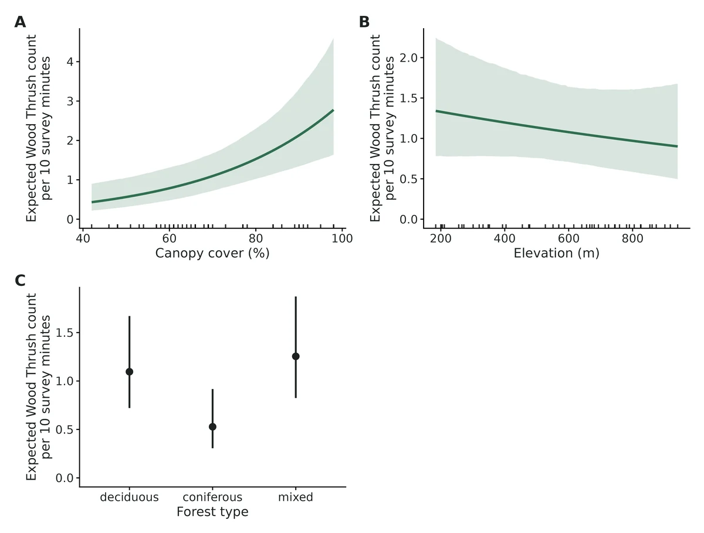
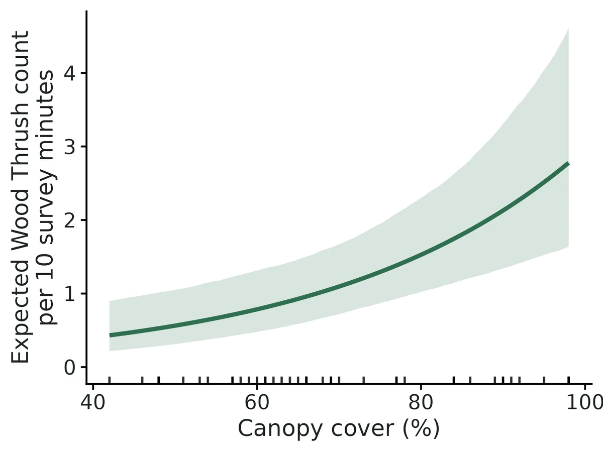
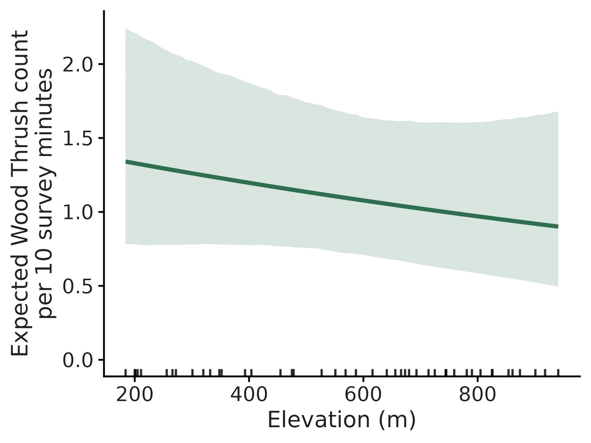
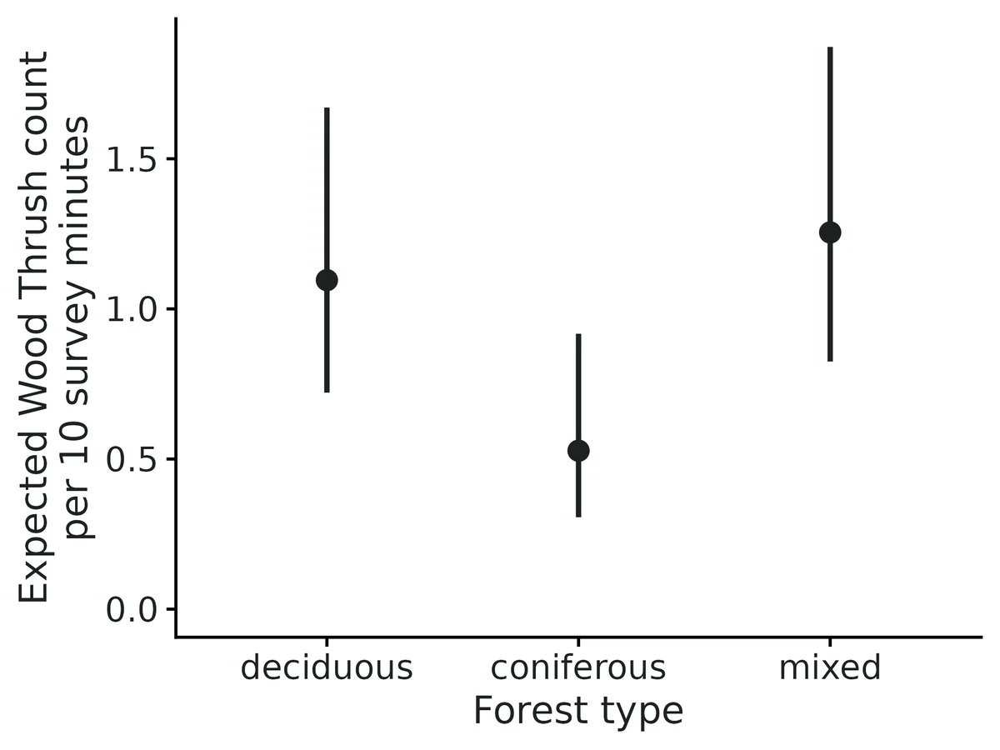

GLM / GLMM with biological interpretation
"How does Y change with X?", where Y is something you measured on each sampling unit:
Is this the right analysis?
Use it when
One response measured on sampling units (sites, plots, nests, animals, quadrats, surveys) and the question is how it changes with habitat, environmental or treatment predictors, possibly with repeated measures within sites/individuals/years (random intercepts). Counts, presence/absence (0/1), successes out of trials, proportions in (0,1), positive continuous measurements (mass, length, biomass) and normal measurements.
Not for
Imperfect detection that must be separated from occurrence or abundance (use occupancy / N-mixture modules); spatial or temporal autocorrelation that must be modelled explicitly; random slopes, nested (1|a/b) syntax, splines/GAMs, ordinal or multinomial responses; causal effect estimation (use the causal/SEM modules); proportions containing exact 0s or 1s (transform first or use binomial with trials).
The data you need
One CSV, one row per observation, with a response column, predictor columns, optional grouping column(s) (site, individual, year), optional effort column (offset) and, for binomial counts, a trials column.
What the example's main data file looks like:
| station | visit | date | observer | survey_min | forest_type | canopy_cover_pct | elevation_m |
|---|---|---|---|---|---|---|---|
| WT-01 | 1 | 2025-05-20 | JL | 5 | mixed | 66 | 725 |
| WT-01 | 2 | 2025-05-29 | JL | 10 | mixed | 66 | 725 |
| WT-01 | 3 | 2025-06-09 | MR | 10 | mixed | 66 | 725 |
| WT-01 | 4 | 2025-06-18 | JL | 10 | mixed | 66 | 725 |
| WT-02 | 1 | 2025-05-21 | JL | 10 | deciduous | 66 | 320 |
Not sure? Use the finder to compare modules.
The worked example
Wood Thrush point counts: negative-binomial GLMM with survey-effort offset and station random intercepts (simulated example)
Wood Thrush (Hylocichla mustelina) is a forest-interior songbird of eastern North America. It nests in the understorey of closed-canopy, mostly deciduous forest, and it has declined over much of its range. A field crew wants to know where the birds are most numerous, so that managers know which stands to protect.
The question: Does the number of Wood Thrushes counted change with canopy cover, elevation and forest type?
The data are simulated, so the true answer is known and the analysis can be checked against it.
What the researcher typed
I have Wood Thrush point counts in wood_thrush_counts.csv: 45 stations, each counted 4 times in May-June 2025. Most counts were 10 minutes, some were 5. I want to know whether the number of thrushes changes with canopy cover, elevation and forest type. Please analyse it and give me a report with figures I can use in a paper.
Run it yourself
Download the example data below and unzip it.
Open the unzipped folder in Claude Code (see Install).
Paste the prompt above. The agent checks the files, writes a plan, runs planted truth, fits the model and writes the report. You can compare your results with the ones below.
Contains wood_thrush_counts.csv, the settings file (config.yaml), a description of the data and a step-by-step walkthrough.
Study design details
| stations | 45 |
|---|---|
| visits per station | 4 |
| observations | 180 |
| family | nbinom2 (log link) |
| offset | survey_min (5 or 10 min); results per 10-min count |
| random effect | (1|station) |
| predictors | canopy_cover_pct, elevation_m, forest_type (deciduous/mixed/conifer; all station-level) |
| forest type counts | deciduous: 15; mixed: 15; conifer: 15 |
Results from the example data

In plain language
- Per 10 percentage points of canopy cover (%) this is associated with a 39% higher expected Wood Thrush count (rate ratio 1.39, 95% CI 1.18 to 1.64).
- Across the observed range of canopy cover (%) (42 to 98), with other continuous predictors at their mean; forest type = deciduous; typical station, the expected Wood Thrush count goes from 0.432 to 2.78.
- Per 100 m of elevation (m) this is associated with a 5.1% lower expected Wood Thrush count (rate ratio 0.949, 95% CI 0.854 to 1.05). The 95% interval includes no effect: the data are compatible with effects from 31% lower to 13% higher, including none.
- Compared with forest type = deciduous (reference), forest type = conifer is associated with a 52% lower expected Wood Thrush count (rate ratio 0.482, 95% CI 0.248 to 0.935): 0.528 vs 1.1.
- Compared with forest type = deciduous (reference), forest type = mixed is associated with a 15% higher expected Wood Thrush count (rate ratio 1.15, 95% CI 0.651 to 2.01): 1.25 vs 1.1. The 95% interval includes no effect: the data are compatible with effects from 35% lower to 101% higher, including none.
- Model checks: DHARMa simulated residuals showed no detectable problems with distribution, dispersion, outliers or zeros (all p >= 0.05).
- These are effects on the expected count as recorded, which combines how many/whether animals are present with how likely they are to be detected or recorded.
More figures



Figures are the module's default publication figures, reduced for the web. The report also saves them as PDF and full-resolution PNG.
Planted truth at the example's design
Before trusting the example's results, the module was run on many simulated data sets with the same design and known true values. Each row is one quantity: did the method get it back? (What the thresholds are.)
All interpreted estimands (canopy, elevation, forest-type effects, mean count) pass planted truth at this design (|rel. bias| <= 7.2%, coverage 0.905-0.940); fit converged; DHARMa all p > 0.5; module cross-checked and negative controls in VALIDATION.md. Station SD (FAIL, -17.6% bias, 23% singular fits) and NB theta (unbounded in 7/199) are nuisance parameters and are not interpreted.
10 of 12 rows pass.
| Quantity | True value | Average estimate | Bias | Coverage | Result |
|---|---|---|---|---|---|
| beta_canopy_cover_pct | 0.39 | 0.387 | -0.9% | 0.94 | ✓ PASS |
| beta_elevation_m | -0.28 | -0.275 | +1.8% | 0.91 | ✓ PASS |
| beta_forest_type_conifer | -0.9 | -0.89 | +1.1% | 0.94 | ✓ PASS |
| beta_forest_type_mixed | -0.25 | -0.245 | +2.1% | 0.93 | ✓ PASS |
| beta_intercept | -2.08 | -2.1 | -1.0% | 0.92 | ✓ PASS |
| mean_response_at_reference | 0.125 | 0.125 | +0.2% | 0.92 | ✓ PASS |
| nb_size_theta | 3 | – | – | – | ✗ FAIL |
| rate_ratio_canopy_cover_pct | 1.48 | 1.48 | +0.4% | 0.94 | ✓ PASS |
| rate_ratio_elevation_m | 0.756 | 0.767 | +1.5% | 0.91 | ✓ PASS |
| rate_ratio_forest_type_conifer | 0.407 | 0.436 | +7.2% | 0.94 | ✓ PASS |
| rate_ratio_forest_type_mixed | 0.779 | 0.817 | +4.9% | 0.93 | ✓ PASS |
| re_sd_station | 0.45 | 0.371 | -17.6% | 0.94 | ✗ FAIL |
Limits that matter
- At 45 stations x 4 visits with ~1 bird per count, the station random-intercept SD is biased -18% (23% of simulated fits singular) and NB theta is sometimes unbounded: neither is interpreted (this run).
- Rate ratios for imprecise contrasts are biased upward in the mean (exp of a noisy log ratio): +7.2% conifer, +4.9% mixed here; log-scale coefficients unbiased (Known limit 1).
- Wald intervals only; recovery coverage 0.905-0.940 at this design (Known limit 4).
- Expected counts are for a typical station (random effect 0), not the landscape mean (Known limit 5).
- Counts confound abundance and detection; a canopy effect could partly be detectability (N-mixture module separates them).
- Spatial autocorrelation among stations is not modelled (Known limit 7).
- Associations, not causal effects.
All known limits from the module's validation record
- Odds/rate ratios for imprecise contrasts are biased upward in the mean. exp(beta-hat) is median-unbiased but not mean-unbiased: E[exp(b)] is about exp(beta + SE^2/2). When the SE of a log ratio exceeds about 0.35 (factor contrasts in Bernoulli GLMMs; small samples), the ratio estimand fails the mean-bias gate: +13% (binomial_glmm habitat), +15-90% in the small designs. The link-scale coefficient passes and the ratio's 95% CI keeps nominal coverage. Report ratios with their CIs; do not average point ratios across studies.
- Few groups. With 10 sites x 4 visits (NB GLMM) Wald intervals for site-level effects under-cover (0.875-0.88) and the site SD is biased -42%. With 15 Bernoulli sites x 4 the site SD interval under-covers (0.845). The module flags fewer than 5 levels; between 5 and ~15 groups, treat site-level effects' intervals as somewhat optimistic and run a planted-truth check at the researcher's design. Power below ~20 sites is low for site-level effects in any case.
- NB size theta needs data. With 100 observations and 30% structural zeros, theta is biased +29% (coverage 0.87). Overdispersion is then hard to separate from zero inflation; the coefficients and zero-inflation probability are still recovered.
- Wald intervals. All intervals are Wald (log scale for SDs and dispersion). Profile or bootstrap intervals are not implemented. For random-effect SDs near zero the interval is meaningless and the report says the fit is singular.
mean_response_at_referenceis for a typical group (random effect = 0), not the population average.- Not validated: random slopes (rejected by the parser), non-default links (probit, cloglog, inverse; accepted but their interpretation sentences are generic), zero-inflation formulas other than
~1(supported, zi_beta_* reported, not recovery-tested), polynomial terms (supported in fitting and plots, not recovery-tested), thestats::glmfallback engine (cross-checked to agree, not separately recovery-tested), and DHARMa test calibration (the tests come from DHARMa, unmodified). - Spatial/temporal autocorrelation is not modelled or tested for.
Engine, references and full details
Engine: glmmTMB (REML for models with random intercepts, ML otherwise; Laplace approximation); stats::glm / MASS::glm.nb fallback for fixed-effects-only models.
References
- Brooks ME, Kristensen K, van Benthem KJ, Magnusson A, Berg CW, Nielsen A, Skaug HJ, Maechler M, Bolker BM (2017). glmmTMB balances speed and flexibility among packages for zero-inflated generalized linear mixed modeling. The R Journal 9(2):378-400. doi:10.32614/RJ-2017-066
- Bolker BM, Brooks ME, Clark CJ, Geange SW, Poulsen JR, Stevens MHH, White J-SS (2009). Generalized linear mixed models: a practical guide for ecology and evolution. Trends in Ecology and Evolution 24(3):127-135.
- McCullagh P, Nelder JA (1989). Generalized Linear Models, 2nd ed. Chapman & Hall.
- Hardin JW, Hilbe JM (2007). Generalized Linear Models and Extensions, 2nd ed. Stata Press.
- Ferrari SLP, Cribari-Neto F (2004). Beta regression for modelling rates and proportions. Journal of Applied Statistics 31(7):799-815.
- Smithson M, Verkuilen J (2006). A better lemon squeezer? Maximum-likelihood regression with beta-distributed dependent variables. Psychological Methods 11(1):54-71.
- Dunn PK, Smyth GK (1996). Randomized quantile residuals. Journal of Computational and Graphical Statistics 5(3):236-244.
- Hartig F (2026). DHARMa: Residual Diagnostics for Hierarchical (Multi-Level / Mixed) Regression Models. R package 0.5.0. doi:10.32614/CRAN.package.DHARMa
- Nakagawa S, Johnson PCD, Schielzeth H (2017). The coefficient of determination R2 and intra-class correlation coefficient from generalized linear mixed-effects models revisited and expanded. Journal of the Royal Society Interface 14:20170213.
- Luedecke D, Ben-Shachar MS, Patil I, Waggoner P, Makowski D (2021). performance: an R package for assessment, comparison and testing of statistical models. Journal of Open Source Software 6(60):3139.
- Schielzeth H (2010). Simple means to improve the interpretability of regression coefficients. Methods in Ecology and Evolution 1(2):103-113.